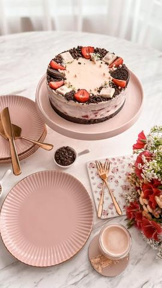

Moja beleška
SačuvanoSastojci
- Podloga
- Fil
- Preliv
Priprema
Za podlogu umešati mleveni oreo keks sa otopljenim puterom, dodati malo mleka, sjediniti pa utisnuti na dno kalupa. Ja sam podesila prečnik 20cm. Ostaviti u frižideru kako bi se stegla podloga dok pripremite fil. Za fil dobro oprati, posušiti i iseckati na sitne kockice jagode. Izlomiti oreo keks. Umutiti marscapone i krem sir, dodati šećer u prahu, sjediniti. Dodati slatku pavlaku pa pred kraj mućenja i kremfix kako bi fil bio dovoljno čvrst. U to sipati jagode i keks, pa špatulom lagano sjediniti. Premazati preko podloge, pa ostaviti malo u frižideru dok napravite preliv. Sitnije izlomljenu čokoladu preliti vrelom slatkom pavlakom, sačekati minut, a onda umešati tako da bude potpuno tečno i bez grudvica. Kada se potpuno prohladi preliti preko fila pa ukrasiti po želji i ostaviti preko noći u frižideru. Nama je nestala za tren 😌😍
Originalni opis sa Instagrama
Lagana tortica sa jagodama i oreo keksom 🍓🍪 Ove tortice koje smišljam usput su mi nekako najdraže, najbrže se jedu, podloge na bazi keksa i putera, kremkasti fil od marscapone ili krem sira, uz dodatak voćkica, najfinijih čokolada.. Ma nema osobe koja se ne oduševi 😍🥰 Ovog puta sam birala oreo keks, jagode i belu čokoladu, pa se nadam da će i vama kombinacija biti 👌🏼 Podloga: •300 gr mlevenog orea •125 gr otopljenog putera •50 ml mleka Fil: •250 gr marscapone sira •200 gr krem sira •250 ml slatke pavlake •50 gr šećera u prahu •1 kremfix •400 gr sitno seckanih jagoda •8 oreo keksića sitnije izlomljenih Preliv: •200 gr bele čokolade •70 ml slatke pavlake Za podlogu umešati mleveni oreo keks sa otopljenim puterom, dodati malo mleka, sjediniti pa utisnuti na dno kalupa. Ja sam podesila prečnik 20cm. Ostaviti u frižideru kako bi se stegla podloga dok pripremite fil. Za fil dobro oprati, posušiti i iseckati na sitne kockice jagode. Izlomiti oreo keks. Umutiti marscapone i krem sir, dodati šećer u prahu, sjediniti. Dodati slatku pavlaku pa pred kraj mućenja i kremfix kako bi fil bio dovoljno čvrst. U to sipati jagode i keks, pa špatulom lagano sjediniti. Premazati preko podloge, pa ostaviti malo u frižideru dok napravite preliv. Sitnije izlomljenu čokoladu preliti vrelom slatkom pavlakom, sačekati minut, a onda umešati tako da bude potpuno tečno i bez grudvica. Kada se potpuno prohladi preliti preko fila pa ukrasiti po želji i ostaviti preko noći u frižideru. Nama je nestala za tren 😌😍 Kako se vama čini..? • • • #torta #vocnatorta #laganatorta #kremastetorte #ukusnetorte #mojirecepti #tortasajagodama #tortasakeksom #oreo #idejezadezert #ukusnirecepti #proverenirecepti #brzoilako